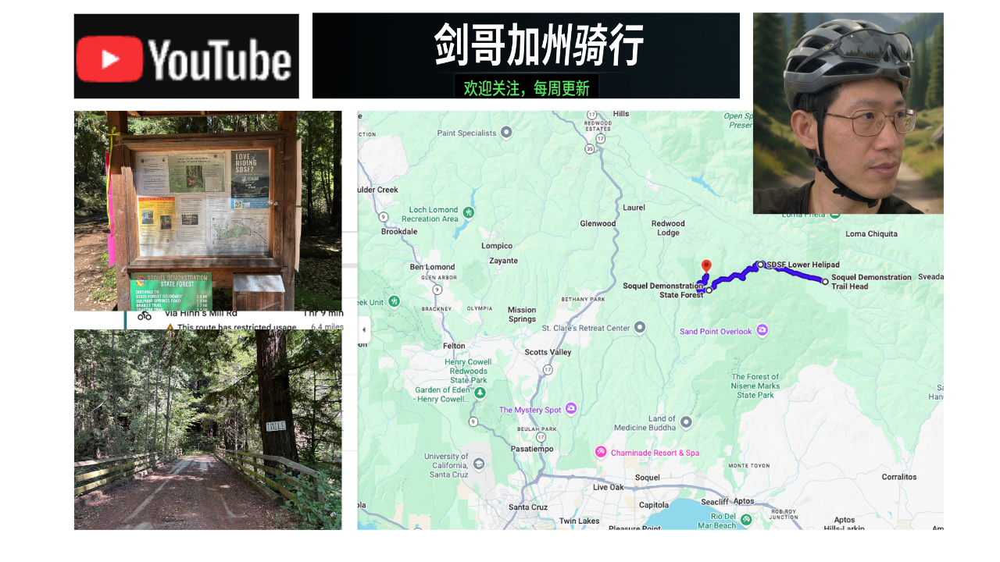

分享一下我的骑车经历...
今天带大家来到 Santa Cruz Mountains 里非常有名的一片骑行天堂——Soquel Demonstration State Forest，也就是当地车友口中的 Demo Forest。今天这条路线虽然只有大约 6.4 英里，但它却是一条非常舒服、非常经典的森林骑行路线。从 Soquel Demonstration Trail Head 出发之后，我们沿着 Hihn's Mill Road 一路骑进森林深处。和很多山地车公园不同，这里没有一开始就连续不断的陡坡，而是采用缓慢起伏的林道，让身体能够慢慢进入状态。一路骑行，两旁都是高大的海岸红杉。阳光透过树梢洒在林道上，即使是炎热的夏天，这里的温度也明显比山下低，非常适合长时间骑行。如果你已经听说过 Demo Forest 最有名的 Flow Trail，也不要误会。今天这条路线并没有进入那些高速下坡单车道，而是一场森林耐力骑行。
难度系数3。
订阅频道，不错过每一次加州探险！ 如果你也向往加州的阳光、自由的骑行生活，或者想发现那些地图上找不到的绝美小径，请一定订阅我的频道并打开小铃铛 🔔！ 你的每一次点击，都是我继续探索和拍摄的最大动力。
可以去 YouTube 上看看完整的路线 VLOG 视频： https://www.youtube.com/watch?v=kSKwJyBjwac
